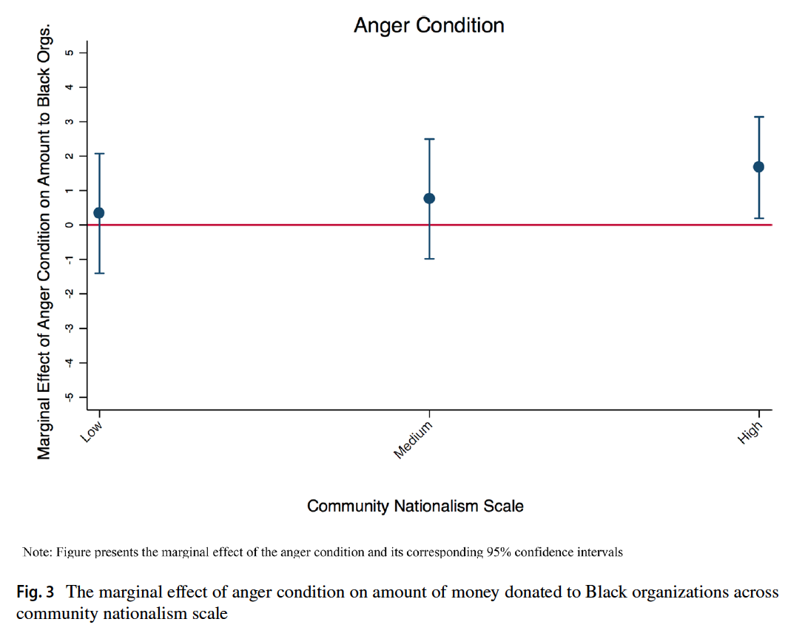

## install.packages("rio", dependencies=T)
library(rio)
banks <- import("data/banksstudy2.dta")5 Visualization
In this section, we will walk through some options for visualizing the results of experiments using R.
- You may wish to refer to the R Graphics cookbook by Winston Chang or Data Visualization by Kieran Healy for additional examples of plotting in R.
- For considerations on plotting for different types of experimental designs and randomization schemes, you may wish to consult Alex Coppock’s chapter in Advances in Experimental Political Science.
This section follows our discussion of survey-based experiments. There are many types of experimental treatments that can be administered via surveys.
5.1 Plotting Average Treatment Effects
The example we will use is from “Black Politics: How Anger Infuences the Political Actions Blacks Pursue to Reduce Racial Inequality” by Antoine J. Banks, Ismail K. White, and Brian D. McKenzie, published in Political Behavior in 2019.
We will replicate the results from Study 2, which is a survey experiment. The sample includes 444 Black treated Black respondents recruited by Qualtrics. The excerpt below shows the experimental manipulation.

Here is a short video walking through the code to plot the ATEs using plot and ggplot. (Via youtube, you can speed up the playback to 1.5 or 2x speed.)
Let’s load the data. Note: This file is in a .dta format, but if you try to use read.dta to load it, you may receive an error because it is too new of a Stata format. As an alternative, we can use the rio package to open the file. Install the package, open the package with library an load the data. The rio packages uses a single import function to load data.
The authors have a variable in their data baddata they use to exclude subjects who failed to follow the instructions of their manipulation. They limit their analyses to those who passed this check. Let’s do the same by removing any subjects that have non-missing values on this variable.
banks <- subset(banks, is.na(baddata)==T)Let’s replicate a portion of the analysis presented in Table 3 of the paper.

We will first calculate our estimate of \(E(Y_i(1_{anger}) - Y_i(0_{no anger}))\) using the difference-in-means estimator: \(\sum_{i=1}^m Y_i(1_{anger}) - \sum_{m+1}^{N-m}Y_i(0_{no anger})\).
- We will compare those in the Anger and Control conditions on the outcome for donations to Black organizations.
- We will use a t-test to do so.
d.i.m <- mean(banks$blackdon[banks$angvcon == 1], na.rm=T) -
mean(banks$blackdon[banks$angvcon == 0], na.rm=T)
t.results <- t.test(banks$blackdon[banks$angvcon == 1],
banks$blackdon[banks$angvcon == 0])
ci <- t.results$conf.intLet’s repeat for the hope condition.
d.i.m2 <- mean(banks$blackdon[banks$hopevcon == 1], na.rm=T) -
mean(banks$blackdon[banks$hopevcon == 0], na.rm=T)
t.results2 <- t.test(banks$blackdon[banks$hopevcon == 1],
banks$blackdon[banks$hopevcon == 0])
ci2 <- t.results2$conf.intWe could have alternatively used a linear regression to assess significance or randomization inference.
Expand for a randomization inference example.
Let’s focus on just the Anger vs. Control first.
angercontrol <- subset(banks, angvcon == 0 | angvcon ==1)
## remove missing data
angercontrol <- subset(angercontrol, is.na(blackdon) ==F)
## install.packages("ri2", dependencies=T)
library(ri2)
## Declare randomization
declaration <- declare_ra(N=nrow(angercontrol), prob=.5)
## Estimate the average treatment effect
set.seed(1215)
ri2_out <- conduct_ri(
formula = blackdon ~ angvcon,
assignment = "angvcon",
declaration = declaration,
sharp_hypothesis = 0,
data = angercontrol
)Plot and compare distribution to observed ATE
plot(ri2_out)Summarize Output
summary(ri2_out) term estimate two_tailed_p_value
1 angvcon 0.9793778 0.041We can manually see what the package is doing by counting how many of the simulated estimates from the empirical distribution of the sharp null hypothesis were more extreme than our estimate from the study. Note that in this case, our p-value is very similar to the t-test.
estimate <- tidy(ri2_out)$estimate
nsims <- length(ri2_out$sims_df$est_sim)
simstimates <- ri2_out$sims_df$est_sim
## Two-tailed p-value
length(simstimates[abs(simstimates) >= abs(estimate)])/nsims[1] 0.041We can compare this to the p-value through the t-test where we assume a t distribution and calculate the area at the extremes as larger or larger than our t-statistic.
5.1.1 ATE using plot
When we want to visualize results in R, generally we plot the main Quantity of Interest
- Usually the estimated average treatment effect and/or average outcome from each condition condition
- With uncertainty estimates
- Potentially also showing the distribution of underlying data
- Some marker to show a relative benchmark (e.g., a line at 0)
The plot function in R is based on a coordinate system. We supply the x= and y= values where we want to place points.
We will make a plot to display the two ATE estimates we just calculated.
- We need to supply the exact same number of values for the x-axis as the y-axis. Let’s plot the ATE estimates at points 1 and 2 on the x-axis and at the corresponding y-values for the ATEs we estimated.
## Plot
plot(x = c(1, 2),
y = c(d.i.m, d.i.m2))This has created the plot, but it is not very informative.
- Let’ set the axis dimensions with
xlim=anylim= - Let’s add a title with
main=- We can adjust the size of the title text with
cex.main
- We can adjust the size of the title text with
- Let’s add a label for y and x axis with
ylabandxlab- We can adjust the size of the labels
cex.lab
- We can adjust the size of the labels
plot(x = c(1, 2),
y = c(d.i.m, d.i.m2),
xlim=c(.5, 2.5),
ylim = c(-1, 2),
main="Average Treatment Effects on Donations to Black Organizations",
cex.main=.8,
ylab="Difference in Donation Amount",
xlab= "Treatment Comparison",
cex.lab=.8)In our case, the values on the x-axis are meaningless. We arbitrarily placed the points at 1 and 2. Let’s get rid of the current x-axis and instead replace it with an axis that labels our comparisons.
- We get rid of the current x-axis with
xaxt="n" - We create a new axis using the
axisfunction. Note: this function goes below theplot()function instead of inside it.
plot(x = c(1, 2),
y = c(d.i.m, d.i.m2),
xlim=c(.5, 2.5),
ylim = c(-1, 2),
main="Average Treatment Effects on Donations to Black Organizations",
cex.main=.8,
ylab="Difference in Donation Amount",
xlab= "Treatment Comparison",
cex.lab=.8,
xaxt="n")
axis(1, at=1:2, labels=c("Anger vs. \n Control","Hope vs. \n Control"),
tick=F)We now have an informative plot of our ATE quantities of interest. However, we still need to add something to visualize uncertainty and a benchmark to indicate the size and/or significance of our quantities.
- We can add a horizonatal line to the plot with
abline(h=). Likeaxis(), this function goes below theplot()function. - We can add confidence intervals as vertical line segments to our plot using the
linesfunction. Again, this adds a layer below our plot.
plot(x = c(1, 2),
y = c(d.i.m, d.i.m2),
xlim=c(.5, 2.5),
ylim = c(-1, 2),
main="Average Treatment Effects on Donations to Black Organizations",
cex.main=.8,
ylab="Difference in Donation Amount",
xlab= "Treatment Comparison",
cex.lab=.8,
xaxt="n")
axis(1, at=1:2, labels=c("Anger vs. \n Control","Hope vs. \n Control"),
tick=F)
abline(h=0, col="red3", lty=2)
lines(c(1,1), ci)
lines(c(2,2), ci2)5.1.2 ATE with ggplot
The package ggplot2 also offers a system of plotting in R. The “gg” in ggplot2 stands for the “Grammar of Graphics.” This program provides another framework for creating figures in R. According to Hadley Wickham, “ggplot2 provides beautiful, hassle-free plots that take care of fiddly details like drawing legends.”
Practically speaking, ggplot() is another tool to plot the same types of figures we have been making in class. Some people prefer ggplot2 because they find the logic of building figures more intuitive using this framework and/or more aesthetically pleasing. However, both ggplot() and the plots we have been making in class can accomplish the same ultimate goals of data visualization– to communicate information transparently, quickly, accurately, simply, and beautifully. Which types of plots you may prefer is up to your own taste.
The syntax for this is different. One of the primary differences is that the ggplot function generally requires that you start from a data.frame object. This means that we will have to organize the set of results we want to plot into a rectangular data.frame.
## Put each result in a vector
angerresults <- c(d.i.m, ci)
hoperesults <- c(d.i.m2, ci2)
## Bind these together as rows, store as dataframe
comb <- data.frame(rbind(angerresults, hoperesults))
## Give columns informative labels
names(comb) <- c("ATE", "lower", "upper")
## Add group indicator
comb$Comparison <- c("Anger vs. \n Control","Hope vs. \n Control")Now we can use the ggplot function from the ggplot2 package. The main plotting function in ggplot2 is the ggplot() function. It will give you access to barplots, boxplots, scatterplots, histograms, etc.
The three primary components of a ggplot() are a dataframe (data =), a set of mapping aesthetics (aes()), and geoms (e.g., geom boxplot, geom bar, geom point, geom line, etc.).
- The function
ggplot()first takes a dataframe that includes the values you would like to plot (e.g.,data = comb). - The aesthetics then include the variable names that you want to plot on the x and y axis (e.g.,
aes(x=Comparison, y=ATE))- Additional mapping aesthetics can be specified. For example, a third variable (or a repeat of a previous variable) can also be specified (e.g.,
fill =,colour =,shape =), which acts as a grouping variable. If this is specified,ggplot()will create a corresponding legend for the plot and will color/make different shapes for different groups within this third variable.
- Additional mapping aesthetics can be specified. For example, a third variable (or a repeat of a previous variable) can also be specified (e.g.,
- After closing out the first
ggplot()parentheses, you then annotate the plot by adding (+) a geometric layer.- In the example below, we use the
geom_pointlayer to add the ATEs andgeom_errorbarlayer to add confidence intervals.
- In the example below, we use the
There are many more possibilities for plotting with ggplot(). For additional resources on all that is gg, I recommend the R Graphics Cookbook.
library(ggplot2)
ggplot(comb, aes(x=Comparison, y=ATE))+
geom_point()+
geom_errorbar(aes(ymin=lower, ymax=upper), width=.1)+
theme_bw()Just like with the other plotting functions in R, you can also specify a number of other arguments to make your plot more informative and aesthetically pleasing. Here, you do this by adding (+) additional arguments. See examples below (e.g., ggtitle, xlab, ylab for titles, ylim for y-axis limits, etc.). We can also add a horizontal line with geom_hline.
ggplot(comb, aes(x=Comparison, y=ATE))+
geom_point()+
geom_errorbar(aes(ymin=lower, ymax=upper), width=.1)+
theme_bw()+
geom_hline(aes(yintercept=0), linetype="dashed", colour="red3")+
ggtitle("Average Treatment Effects on Donations to Black Organizations")+
theme(plot.title = element_text(hjust = 0.5))# centers title5.2 Heterogeneous Treatment Effects
Let’s replicate Figure 3 of the paper to study heterogeneous treatment effects. The authors compute these using a regression analysis. We will focus on the Anger vs. Control condition.

First, let’s limit the sample to just these two conditions.
angcontrol <- subset(banks, angvcon == 1 | angvcon == 0)We will look at how the effect of anger varies across the Community Nationalism Scale in the variable blackauto3. This is a three-point scale with points at 0,1, and 2. We could treat this as a numeric variable or as a categorical variable. We will first do it as a categorical variable.
## option 1- categorical
fit <- lm(blackdon ~ angvcon*factor(blackauto3), data=angcontrol)
summary(fit)
Call:
lm(formula = blackdon ~ angvcon * factor(blackauto3), data = angcontrol)
Residuals:
Min 1Q Median 3Q Max
-5.8611 -3.1750 -0.1909 3.3953 7.1579
Coefficients:
Estimate Std. Error t value Pr(>|t|)
(Intercept) 2.8421 0.6330 4.490 1.07e-05 ***
angvcon 0.3329 0.8840 0.377 0.707
factor(blackauto3)1 1.0051 0.9076 1.107 0.269
factor(blackauto3)2 1.3488 0.8231 1.639 0.103
angvcon:factor(blackauto3)1 0.4245 1.2484 0.340 0.734
angvcon:factor(blackauto3)2 1.3373 1.1577 1.155 0.249
---
Signif. codes: 0 '***' 0.001 '**' 0.01 '*' 0.05 '.' 0.1 ' ' 1
Residual standard error: 3.902 on 260 degrees of freedom
(8 observations deleted due to missingness)
Multiple R-squared: 0.06442, Adjusted R-squared: 0.04643
F-statistic: 3.581 on 5 and 260 DF, p-value: 0.003779Focus on the interaction term when interpreting the results for the heterogeneous treatment effects.
## option 2- numeric
fit.numeric <- lm(blackdon ~ angvcon*blackauto3, data=angcontrol)We can then calculate the average treatment effects within each level of blackauto3 using the marginaleffects package.
- The first input is the object name for the regression model (e.g.,
fit). - The
variablesinput is then the treatment condition, or the variable for which you want to estimate the marginal effect on the outcome. - We then specify that we want to calculate this contrast across different levels of another variable, “blackauto3”.
library(marginaleffects)
outp <- avg_comparisons(fit, variables = list(angvcon = c(0, 1)),
by = "blackauto3",
newdata = datagridcf(blackauto3 = c(0, 1, 2),
angvcon = c(0,1)))
summary(outp)
Term Contrast blackauto3 Estimate Std. Error z Pr(>|z|) S
angvcon mean(1) - mean(0) 0 0.333 0.884 0.377 0.7065 0.5
angvcon mean(1) - mean(0) 1 0.757 0.882 0.859 0.3902 1.4
angvcon mean(1) - mean(0) 2 1.670 0.748 2.234 0.0255 5.3
2.5 % 97.5 %
-1.400 2.07
-0.970 2.49
0.205 3.14
Columns: term, contrast, blackauto3, estimate, std.error, statistic, p.value, s.value, conf.low, conf.high, predicted_lo, predicted_hi, predicted
Type: response The summary is already in a nice dataframe format, which makes it easy to use ggplot.
ggplot(outp, aes(x=blackauto3, y=estimate))+
geom_point()+
geom_errorbar(aes(ymin=conf.low, ymax=conf.high), width=.1)+
theme_bw()+
geom_hline(aes(yintercept=0), linetype="dashed", colour="red3")+
ggtitle("Average Treatment Effects on Donations to Black Organizations \n by Community nationalism")+
ylab("Average Treatment Effects on Black Org. Donations")+
xlab("Community Nationalism")+
scale_x_discrete(labels = c("Low", "Medium", "High"))+
theme(plot.title = element_text(hjust = 0.5))# centers titleHere’s an alternative way to look at it with geom_line and geom_ribbon
ggplot(outp, aes(x=blackauto3, y=estimate))+
geom_point()+
geom_line()+
geom_ribbon(aes(ymin=conf.low, ymax=conf.high), alpha=.4)+
theme_bw()+
geom_hline(aes(yintercept=0), linetype="dashed", colour="red3")+
ggtitle("Average Treatment Effects on Donations to Black Organizations \n by Community nationalism")+
ylab("Average Treatment Effects on Black Org. Donations")+
xlab("Community Nationalism")+
scale_x_discrete(labels = c("Low", "Medium", "High"))+
theme(plot.title = element_text(hjust = 0.5))# centers title`geom_line()`: Each group consists of only one observation.
ℹ Do you need to adjust the group aesthetic?An alternative way to represent heterogeneity is instead of plotting the conditional average treatment effects, we can plot the raw outcomes in each condition.
We can then calculate the estimated outcomes using the avg_predictions function.
library(marginaleffects)
outp2 <- avg_predictions(fit, variables = c("blackauto3", "angvcon"),
newdata=datagridcf(blackauto3 = c(0, 1, 2),
angvcon = c(0,1)))
outp2$blackauto3 <- as.numeric(as.character(outp2$blackauto3))
outp2$angvcon <- as.factor(outp2$angvcon)ggplot(outp2, aes(x=blackauto3, y=estimate,
fill=as.factor(angvcon)))+
geom_point()+
geom_line()+
geom_ribbon(aes(ymin=conf.low, ymax=conf.high), alpha=.4)+
theme_bw()+
ggtitle("Average Donations to Black Organizations \n by Community nationalism")+
ylab("Average Black Org. Donations")+
xlab("Community Nationalism")+
scale_fill_manual("Condition", labels=c("Control", "Anger"), values=c("orange", "dodgerblue"))+
scale_x_continuous(breaks = c(0,1,2),
labels = c("Low", "Medium", "High"))+
theme(plot.title = element_text(hjust = 0.5))# centers title5.3 Some additional plotting options
The common visualizations used to show average treatment effects do not give much information about the distributions of underlying data. Here are a few examples of plotting the underlying distributions.
- You might also explore
geom_barfor outcomes that are binary or categorical in nature as an alternative togeom_histogram.
Create a variable that summarizes all three experimental conditions. This will make it easier to plot data grouped by each condition.
banks$condition <- NA
banks$condition[banks$angvcon == 1] <- "Anger"
banks$condition[banks$hopevcon == 1] <- "Hope"
banks$condition[banks$angvcon == 0 & banks$hopevcon == 0] <- "Control"
banks$condition <- factor(banks$condition, levels=c("Control", "Anger", "Hope"))We filter out respondents who were not assigned to any condition. You can do this as part of the plot code, or you can banks <- subset(banks, is.na(condition)==F) prior to running the plot code.
library(tidyverse)
banks %>%
filter(is.na(condition)==F) %>%
ggplot(aes(x=blackdon, fill=condition))+
geom_histogram(alpha=.4)+
theme_bw()+
ggtitle("Distribution of Donations to Black Organizations")+
theme(plot.title = element_text(hjust = 0.5),
legend.position = "bottom") +
facet_grid(~condition)+
xlab("Amount Donation (dollars)")banks %>%
filter(is.na(condition)==F) %>%
ggplot(aes(y=blackdon, x=condition, color=condition))+
geom_boxplot()+
geom_jitter(alpha=.5)+
theme_bw()+
ggtitle("Distribution of Donations to Black Organizations")+
theme(plot.title = element_text(hjust = 0.5),
legend.position = "bottom") +
ylab("Amount Donation (dollars)")
banks %>%
filter(is.na(condition)==F) %>%
ggplot(aes(x=blackdon, fill=condition))+
geom_density(alpha=.5)+
theme_bw()+
ggtitle("Distribution of Donations to Black Organizations")+
theme(plot.title = element_text(hjust = 0.5)) +
facet_grid(~condition)+
xlab("Amount Donation (dollars)")Here is a way to show the means and confidence intervals for each condition. This figure is based on the plot in Figure 17.1 from Alex Coppock’s chapter in Advances in Experimental Political Science.
## Find means and confidence intervals by condition
banks <- subset(banks, is.na(condition)==F)
m.cond <- tapply(banks$blackdon, banks$condition, mean, na.rm=T)
ci.hope <- t.test(banks$blackdon[banks$condition == "Hope"])$conf.int
ci.anger <- t.test(banks$blackdon[banks$condition == "Anger"])$conf.int
ci.control <- t.test(banks$blackdon[banks$condition == "Control"])$conf.int
combd <- data.frame(cbind(cbind(m.cond),rbind(ci.control, ci.anger, ci.hope)))
names(combd) <- c("Mean", "lower", "upper")
combd$condition <- c("Control", "Anger", "Hope")
combd$condition <- factor(combd$condition, levels=c("Control", "Anger", "Hope"))
## Note we draw from both data=combd and data=banks
ggplot(combd, aes(x=condition, y=Mean, color=condition)) +
geom_point(data = banks, aes(y=blackdon),
position = position_jitter(width = 0.2, height = 0.1),
alpha = 0.4) +
geom_point(size = 3) +
geom_errorbar(aes(ymin = lower, ymax = upper), width = 0) +
theme_bw() +
ggtitle("Donations to Black Organizations by Condition")+
theme(plot.title = element_text(hjust = 0.5)) +
scale_y_continuous(breaks = seq(0, 10, length.out = 5)) +
theme(axis.title.x = element_blank()) +
ylab("Donations (dollars)")5.4 Examples of arguments in plot
Here are some common R plotting functions and arguments
Create a plot
plot(): for scatterplots and trend plotsbarplot(): for barplot comparisons across categoriesboxplot(): boxplot for summaries of numeric variableshist(): for histogram summaries of a single numeric variable
Aesthetic arguments within a plot
main =: Specifies the main title of the plot. Supply text (e.g.,main = "my title")ylab =: Specifies the title of the y-axis. Supply text (e.g.,ylab = "Mean of variable")xlab =: Specifies the title of the x-axis. Supply text (e.g.,xlab = "X variable name")ylim =: Specifies the range of the y-axis. Supply vector of two numbers (e.g.,ylim = c(0, 100))xlim =: Specifies the range of the x-axis. Supply vector of two numbers (e.g.,xlim = c(0, 100))bty="n": Removes the border box around the plotcex,cex.main,cex.names,cex.lab,cex.axis: Changes the size of different elements of a plot. Default is 1, so a value of .8 would be smaller than default, and 1.2 would be bigger than normal.type =: Specifies the type of plot (e.g.,type="l"is a line plot,type="b"is a plot with points and lines connecting them)lwd=: Specifies the width of a line on a plot. Default is 1. E.g.,lwd=3makes a line much thickerpch=: Specifies the point type. E.g.,pch=15lty=: Specifies the line type. E.g.,lty=2is a dashed linecol=: Specifies the color of the central element of the plot. Can take a single color or vector of colors. Usecolors()in the console to see all R colors.names: Specifies a set of labels in a barplot
Ways to annotate a plot (generally added below the initial plotting function)
abline(): Adds a line to the plot at a particular point on the x- or y- intercept, either horizontal, vertical, or of a particular slope- Example: Adding a horizontal line at a particular at a y value of 2
abline(h=2) - Example: Adding a vertical line at a particular at a x value of 2
abline(v=2)
- Example: Adding a horizontal line at a particular at a y value of 2
lines(x=, y=): Adds a line connecting pairs of x- and y-coordinates. We used this to add the South line to the social mobility plot.axis(): Used to replace the default x- or y- axis that R will create with a customized axis- To create an original y-axis, use
axis(2, vectorofvalues, labels)and specifyyaxt="n"inside the plotting function to remove the original y-axis. - To create an original x-axis, use
axis(1, vectorofvalues, labels)and specifyxaxt="n"inside the plotting function to remove the original x-axis.
- To create an original y-axis, use
legend(): Adds a legend to a plot. Can specify the location as the first argument (e.g.,"bottomleft"or"topright")text(): Adds text to a plot at specific x- and y- locations. (E.g.,text(x=3, y=4, "Here is a point"). The x and y arguments can be single numbers or a vector of numbers. x and y need to be the same length.points(): Adds points to a plot at specific x- and y- locations. Inputs are much likeplot
5.5 Creating Tables from R
Formatting and Exporting R Results
R has a number of tools, including the packages texreg, xtable, and stargazer, which can be used to export tables made in R to nicely formatted LaTex or html output.
Here is a link to the texreg package documentation. Section 5 has examples of the texreg and htmlreg functions within the texreg package. These can be integrated into R Markdown and Sweave documents, and their output can be pasted into LaTex or Microsoft Word.
Your choice of function will depend on where you ultimately want your results to be compiled. If you are generating results that will be compiled to pdf using LaTex, then texreg works well. If you are exporting results to Word, than you may wish to use the htmlreg function within the texreg package, which will generate output that can be pasted into Word.
A simple example using R Markdown html output. (Note, if you wanted to export the table to Word, you would add an argument specifying file = "myfit.doc" to the function. See the above link for examples:
mydata <- read.csv("https://raw.githubusercontent.com/ktmccabe/teachingdata/main/resume.csv")
fit <- lm(call ~ race, data=mydata)## First time you use texreg, install it
install.packages("texreg")library(texreg)
htmlreg(list(fit),
stars=c(0.001, 0.01, 0.05),
caption = "Regression of Call Backs on Race")| Model 1 | |
|---|---|
| (Intercept) | 0.06*** |
| (0.01) | |
| racewhite | 0.03*** |
| (0.01) | |
| R2 | 0.00 |
| Adj. R2 | 0.00 |
| Num. obs. | 4870 |
| ***p < 0.001; **p < 0.01; *p < 0.05 | |
You can add more arguments to the function to customize the name of the model and the coefficients. You can also add multiple models inside the list argument, for example, if you wanted to present a table with five regression models at once. Here is an example with two:
fit2 <- lm(call ~ race + sex, data=mydata)
library(texreg)
htmlreg(list(fit, fit2),
stars=c(0.001, 0.01, 0.05),
caption = "Regression of Call Backs on Race and Sex")| Model 1 | Model 2 | |
|---|---|---|
| (Intercept) | 0.06*** | 0.07*** |
| (0.01) | (0.01) | |
| racewhite | 0.03*** | 0.03*** |
| (0.01) | (0.01) | |
| sexmale | -0.01 | |
| (0.01) | ||
| R2 | 0.00 | 0.00 |
| Adj. R2 | 0.00 | 0.00 |
| Num. obs. | 4870 | 4870 |
| ***p < 0.001; **p < 0.01; *p < 0.05 | ||
5.5.1 Additional formatting examples
Here are some additional examples with different formats. You can run them on your own computer to see what the output looks like.
The package texreg has three primary formats
texreg()for LATEX output;htmlreg()for HTML, Markdown-compatible and Microsoft Word-compatible output;screenreg()for text output to the R console.
If you are working with a LaTex document, I recommend using texreg(), which will output LaTex syntax in your R console, which you can copy and paste into your article document.
Note: this function allows you to customize model and coefficient names.
library(texreg)
texreg(list(fit, fit2),
stars=c(0.001, 0.01, 0.05),
caption = "Regression of Call Backs on Race and Sex",
custom.model.names = c("Bivariate", "Includes Sex"),
custom.coef.names = c("Intercept",
"Race- White",
"Sex- Male"))If you are working with a Microsoft Word document, I recommend using htmlreg() and specifying a file name for your output. This will export a file to your working directory, which you can copy and paste into your Word article document. Otherwise, the syntax is the same as above.
library(texreg)
htmlreg(list(fit, fit2), file = "models.doc",
stars=c(0.001, 0.01, 0.05),
caption = "Regression of Call Backs on Race and Sex",
custom.model.names = c("Bivariate", "Includes Sex"),
custom.coef.names = c("Intercept",
"Race- White",
"Sex- Male"))If you are trying to read the output in your R console, that’s when I would use screenreg(). However, for professional manuscript submissions, I would recommend the other formats.
library(texreg)
screenreg(list(fit, fit2),
stars=c(0.001, 0.01, 0.05),
caption = "Regression of Call Backs on Race and Sex",
custom.model.names = c("Bivariate", "Includes Sex"),
custom.coef.names = c("Intercept",
"Race- White",
"Sex- Male"))The package stargazer allows similar options. I don’t think there are particular advantages to either package. Whatever comes easiest to you. The default for stargazer will output LaTex code into your R console.
- Note that the syntax is similar but has slightly different argument names from the
texregpackage. - Also, the intercept is at the bottom by default for
stargazer. Be careful of the covariate ordering when you add labels.
library(stargazer)
stargazer(list(fit, fit2),
star.cutoffs=c(0.05,0.01, 0.001),
title= "Regression of Call Backs on Race and Sex",
dep.var.labels.include = F,
column.labels = c("Call Back", "Call Back"),
covariate.labels = c("Race- White",
"Sex- Male",
"Intercept"))You can adjust the type of output in stargazer for other formats, similar to texreg. Here is an example of Microsoft Word output.
library(stargazer)
stargazer(list(fit, fit2), out = "modelstar.doc", type="html",
star.cutoffs=c(0.05,0.01, 0.001),
dep.var.labels.include = F,
title= "Regression of Call Backs on Race and Sex",
column.labels = c("Call Back", "Call Back"),
covariate.labels = c("Race- White",
"Sex- Male",
"Intercept"))5.5.2 Additional Table Types
Sometimes you might want to create tables that are not from regression models, such as tables for descriptive statistics. R has other packages for tables of this type.
For example xtable can create simple html and latex tables. You just have to supply the function with a table object or matrix.
Here is a first example making a formated table using crosstabs of two variables.
mydata <- read.csv("https://raw.githubusercontent.com/ktmccabe/teachingdata/main/resume.csv")
library(xtable)
table1 <- table(race = mydata$race, sex = mydata$sex)## RMarkdown html
print(xtable(table1), type="html")| female | male | |
|---|---|---|
| black | 1886 | 549 |
| white | 1860 | 575 |
## LaTeX
print(xtable(table1))## Word
print(xtable(table1), type="html", file = "crosstab.doc")Example with a t-test
- We assemble the results in a vector. Using
rbindmakes it into a matrix object. - If you had multiple t-tests, you could
rbind()several vector rows together into one xtable - I extracted the estimates, t-statistic, and confidence intervals. You could also extract the p-value.
## Run t-test and gather results
mydata <- read.csv("https://raw.githubusercontent.com/ktmccabe/teachingdata/main/resume.csv")
t.resume <- t.test(mydata$call[mydata$race == "black"],
mydata$call[mydata$race == "white"])
estimates <- t.resume$estimate
cinterval <- t.resume$conf.int
tstat <- t.resume$statistic
results <- c(estimates, cinterval, tstat)
names(results) <- c("Mean Black App", "Mean White App", "Lower CI", "Upper CI", "t-statistic")
results <- rbind(results)library(xtable)
## Rmarkdown html
print(xtable(results), type="html", include.rownames = F)| Mean Black App | Mean White App | Lower CI | Upper CI | t-statistic |
|---|---|---|---|---|
| 0.06 | 0.10 | -0.05 | -0.02 | -4.11 |
library(xtable)
## Word doc
print(xtable(results), type="html", include.rownames = F, file="tresults.doc")library(xtable)
## Latex
print(xtable(results), include.rownames = F)